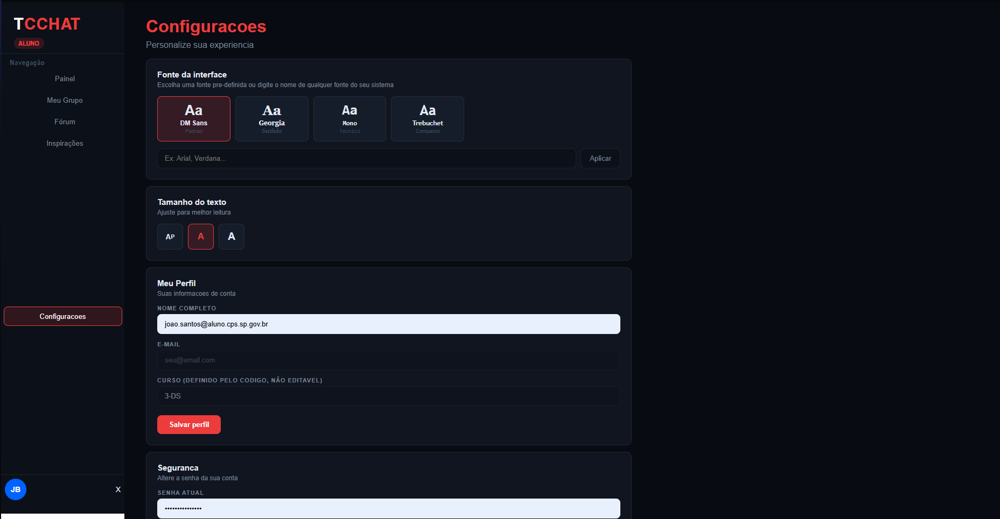

Grupo 01 No prazo
Agro Connect
Sistema web/mobile para gestão de estoque e monitoramento de grãos via IoT.
76% concluído
Plataforma para projetos acadêmicos
Centralize tarefas, prazos, arquivos e conversas em um só lugar. O TCCHAT aproxima alunos, orientadores e coordenação em cada etapa do projeto.
Sobre o TCCHAT

Colaboração que aconteceO TCCHAT é uma plataforma de gestão de TCC que transforma a rotina acadêmica em um processo simples, visual e colaborativo.
Alunos acompanham suas entregas, professores orientam com clareza e coordenadores enxergam o panorama completo das turmas. Tudo conectado, sem planilhas confusas ou e-mails perdidos.
Projetos em destaque
Acompanhe o andamento dos projetos da turma em um só painel.
Sistema web/mobile para gestão de estoque e monitoramento de grãos via IoT.
Plataforma gamificada para ensinar lógica de programação.
App mobile para agendamento entre psicólogos e pacientes.
Otimização de rotas de transporte público com dados de GPS.
Marketplace sustentável para artesãos locais.
Quem faz acontecer

Direção Backend
Backend
Frontend e Design
Direção, Backend e Relatório
Frontend e Backend
Acompanhe de perto
Alunos atualizam o andamento, orientadores validam cada etapa e coordenadores enxergam o panorama completo da turma — tudo sincronizado automaticamente.